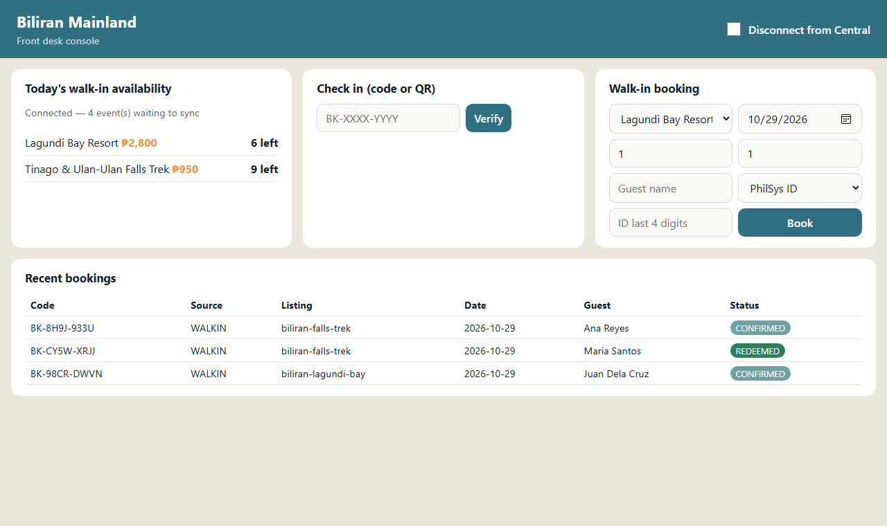

| Task | File / evidence (repository github.com/Abylon10/BookingSystem) |
|---|---|
| 1.1, 1.1.1, 1.2 | docs/System-Design-and-Initial-Considerations.pdf §1 Introduction, §2 Objectives, §3 Scope and limitations, §6 Roles, §4.1 and §13 parallel/distributed components; §18 team roles |
| 2.1 | Same document §4 conceptual framework (IPO), §5 architecture diagram, §8 flowcharts, §9 sequence diagrams; short version docs/Framework-and-Flowcharts.pdf |
| 2.2 | Same document §5.1 module list, §5.2 interfaces, §5.3 data flow, §11 data model (ERD), §15 technology stack; gRPC contract proto/booking.proto |
| 2.3 | docs/Framework-Review-Slides.pdf (short review slides) + the framework document above |
| 3.1 | Baseline prototype, source version git tag baseline-v1-2026-10-29. Screenshot: docs/evidence/2026-10-29-baseline-island-console.png (right) |
| 4.1, 4.2, 5.2 | Preliminary measurements from the prototype (local laptop, 150 ms simulated link): parallel search 2.93× faster than sequential (180 ms vs 527 ms, 10 runs each); 30 concurrent bookings for 6 rooms → exactly 6 booked, 0 oversold; parallel double check-in → exactly one success |
| 6.1 | README.md (setup), DESIGN.md (v2 design), every code block commented |

Baseline (task 3.1): Biliran island node console running the v1 prototype — walk-in availability, three walk-in bookings, one guest checked in (REDEEMED), and four events waiting in the outbox to sync to central. Captured 29 Oct 2026. The v1 prototype predates the adviser's v2 changes (packages, no tickets); it is being reworked to v2 under tasks 3.1–3.2.